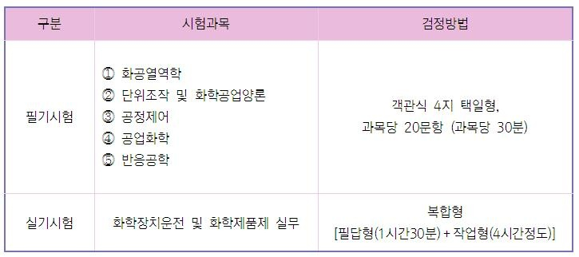

화공기사
화공기사는 주로
석유화학, 정유, 도로, 화약, 건설, 토목 등 화학공학이 쓰이는 산업 전반
에 취업하고자 하는 분들이 많이 취득합니다. 활용 범위가 광범위하지만,
취업시장에서 특별히 우대해주지는 않는다는
단점이 있습니다.
그러나 화공하면 가장 먼저 떠오르는 자격증인 만큼,
실제로 자격증 취득을 위해 학습해야 할 내용들이 화학공학과에서 배우는 내용 위주로 구성되어 있습니다.
시험과목 및 검정방법

가스기사
화학분석기사
대기환경기사
수질환경기사
처음으로